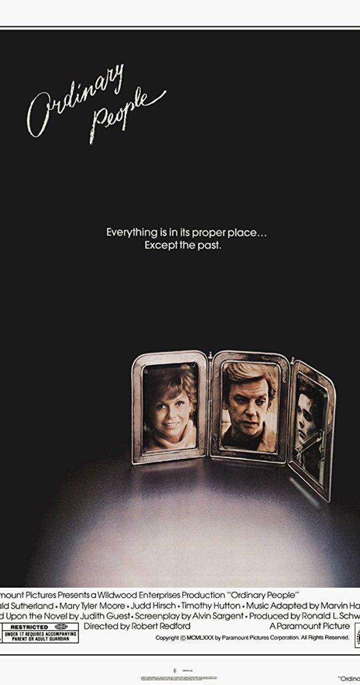

Centered around a young black man growing up in Miami as he tries
to figure out his sexuality, it was lauded for it’s honest portrayal
of Miami and it's moving story.

The film was incredibly successful and even went on to win Best Picture at
the Academy Awards the following year. It became not only the first LGBT
film win best picture, but the first film with an all black cast, making
it a revolutionary win for the filmmaking industry and large step in the right
direction for proper representation throughout all of cinema.
But not only wasthere representation in front of the camera, there was also
representation behind it as well,leading to one of the film’s editors to be the
first black woman to be nominated for an editing Oscar.
Now if we take a look back about 40 years earlier to 1980, the Best Picture winner
was a film called Ordinary People. Featuring an all white cast, the movie focused on a how a
father, mother, and son cope with the loss of their son/brother. While the son tries to deal with
his feelings about the situation, his mother just tries to bury it all deep within herself.

While it is considered a good film, it is telling another white story,
the type of story that has been told before and thus isn’t pushing the boundaries
or doing anything “new.” Taking a look at the nominations of that year, the big four
acting awards nominees are all white, showing what an issue this was back in the day.
While it may be apparent now, it took quite a long time to get to where we are
now, where a movie like Moonlight could even be considered to win the Best Picture award.
Sources: